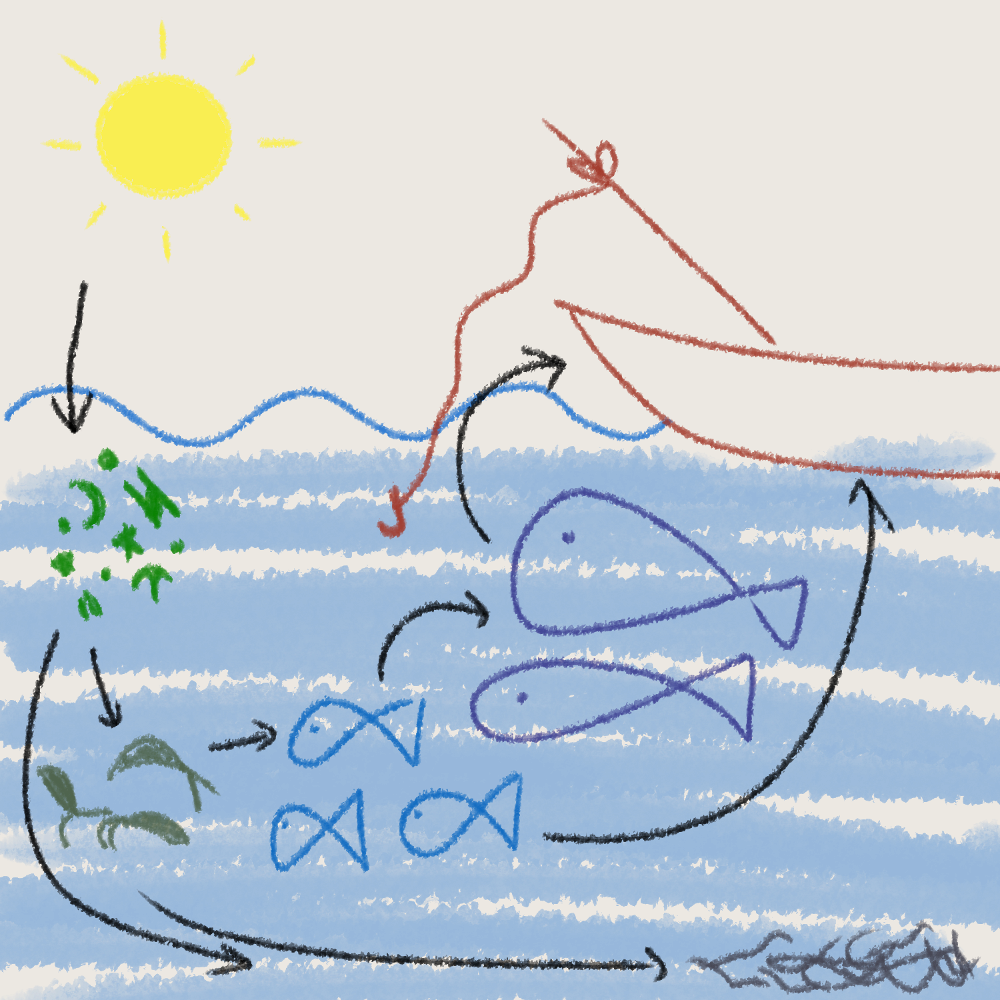

Phytoplankton form the base of the aquatic food web. Along with bacteria and algae, phytoplankton are called primary producers, as they use photosynthesis to convert energy from sunlight into chemical energy (food).
Primary producers enter the food chain to serve as food sources for smaller sea organisms, called primary consumers. These include zooplankton, crustaceans and small fish. In turn, primary consumers are eaten by larger animals like whales, sharks, tuna, jellyfish and others.
Humans are considered one of the top predators of the aquatic food-web!
Uneaten organisms and animal parts that were not consumed during feeding end up at the bottom of the ocean, where bottom-dwelling scavengers like many crabs and lobsters may eat them. Any organic material that is not consumer is decomposed by bacteria.
The resulting waste then becomes nutrients that can be used by the producers, and the cycle continues.
Sources:
- https://www.noaa.gov/education/resource-collections/marine-life/aquatic-food-webs
- https://teara.govt.nz/en/diagram/5137/marine-food-chain
- https://www.britannica.com/video/152183/Phytoplankton-foundation-food-chains
- https://oceanconservancy.org/blog/2019/08/09/plankton-small-organism-big-role/
- https://www.sciencelearn.org.nz/resources/367-toxins-and-food-webs
- https://manoa.hawaii.edu/exploringourfluidearth/biological/fish/energy-acquisition-growth-development-and-reproduction-fish
